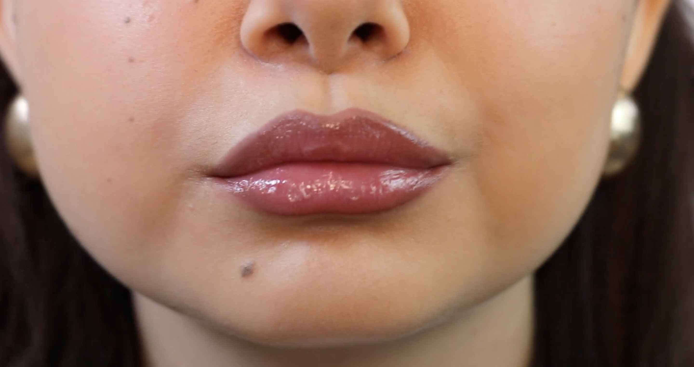
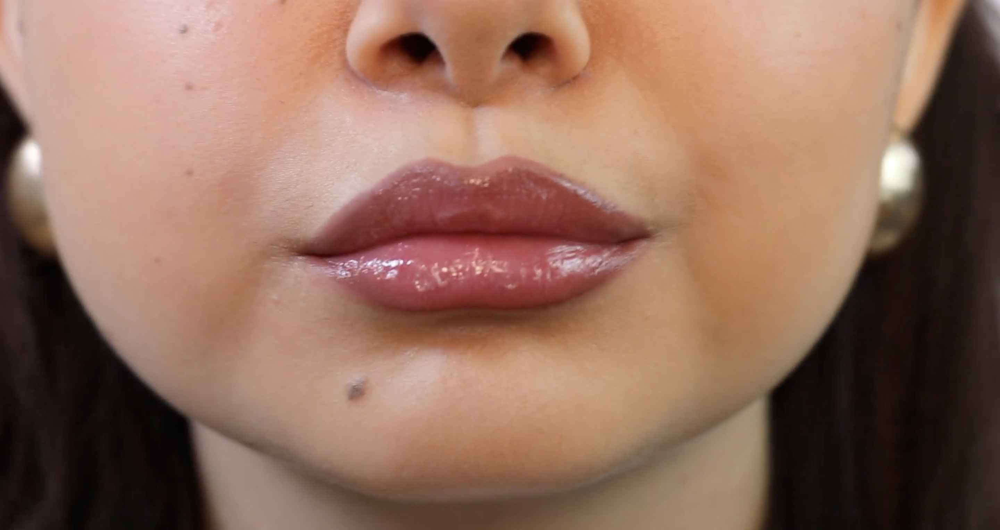
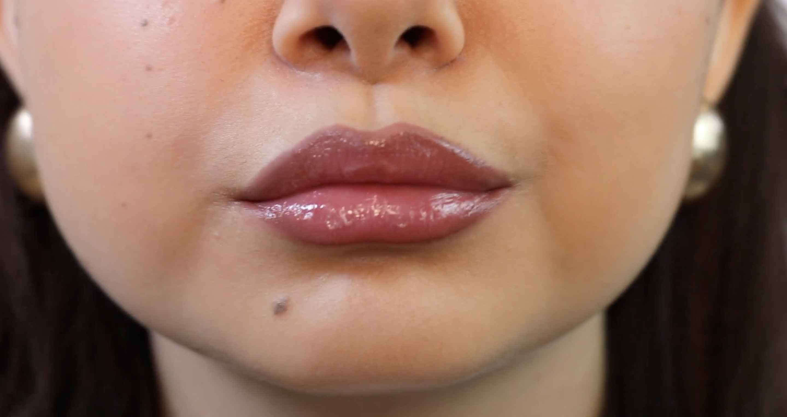
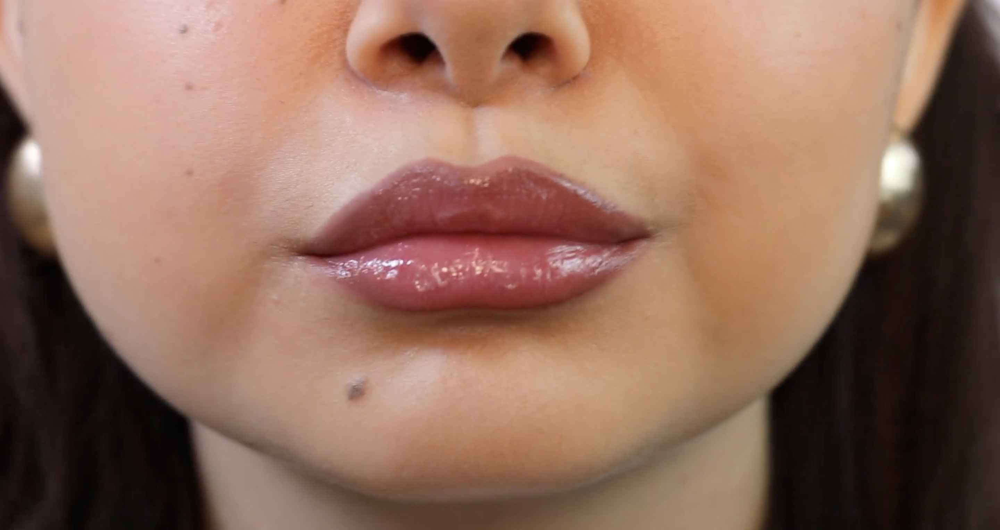
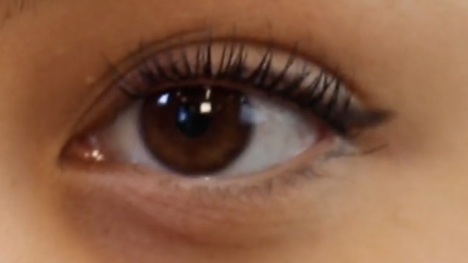
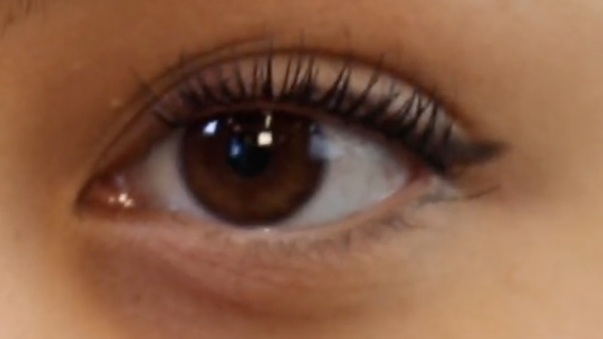

Se forskellen på før og efter påførelse af lipliner og lipgloss
PRODUKTER:KIKO MILANO Lipliner - 517, KIKO MILANO Lipgloss - 17
 

Se forskellen på før og efter påførelse af Mascara
PRODUKTER:Maybelline New York - Lash Sensational Sky High Vandfast Mascara

Se forskellen på før og efter påførelse af hudpleje, concealer og foundation.
PRODUKTER: Lancaster Solcream, Max Factor - Miracle Pure Skin Illuminating Serum, ANUA - Serum, NYX - Marshmallow Primer,
ELF - Soft Glam Satin Foundation - Light Cool, Maybelline New York Fit Me - Medium, Real Techniques Beauty Blender